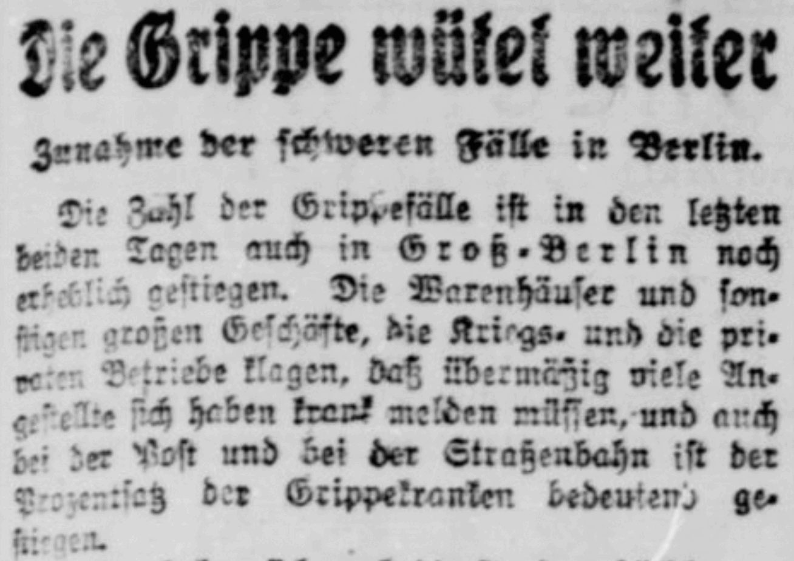
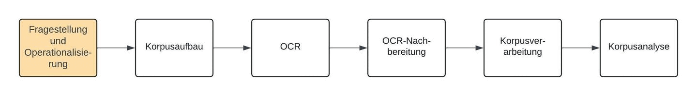

Quantitative Analyse der Medienwellen der Spanischen Grippe (1918/19). Eine Fallstudie#
{kind=link}

Die vorliegende Fallstudie bereitet – in Form eines “Jupyter Books” – den Prozess und die Ergebnisse eines Forschungsprojekts aus den Digital Humanities didaktisch auf. Schritt für Schritt wird nachvollziehbar,
wie eine Forschungsfrage entwickelt und operationalisiert wird,
ein entsprechendes Korpus aufgebaut, bereinigt und angereichert wird,
um schließlich quantitative Analysen auf diesem Korpus durchzuführen.
Anhand von historischen Tageszeitungen wird dabei eine Frage aus dem Feld der Digital History nachgegangen: Welchen quantitativen Mustern folgte die Berichterstattung über die Spanische Grippe in den Jahren 1918/1919?
Zielgruppe#
Die Fallstudie richtet sich an Geisteswissenschaftler:innen auf fortgeschrittener Qualifikationsstufe. Kenntnisse der Digital Humanites sind nicht erforderlich, wohl aber eine prinzipiell Neugier und Offenheit gegenüber digitalen Arbeitsweisen und quantifizierten Forschungsansätzen.
Struktur der Fallstudie#
Die Gliederung der Fallstudie lässt sich jederzeit durch die Menüleiste links im Browser nachvollziehen. Insgesamt vollzieht die Fallstudie 6 Schritte:

Fig. 1 Flussdiagramm der Fallstudie, die sich aus sechs Arbeitspaketen zusammensetzt.#
Im 1. Schritt entwickeln wir eine Forschungsfrage und operationalisieren diese Forschungsfrage für die quantitative Analyse, entwickeln also ein Konzept, wie wir mittels Messoperationen zu einer Antwort auf die Forschungsfrage kommen (siehe Kapitel “Fragestellung und Operationalisierung”).
Im 2. Schritt bauen wir ein Korpus aus Textobjekten für die Analyse auf, das zunächst aus PDF-Dateien besteht (siehe Kapitel “Korpusaufbau”).
Im 3. Schritt machen wir die Textobjekte im Korpus, die zunächst nur als Bilddateien vorliegen, mittels Optical Character Recognition (OCR) maschinenlesbar (siehe Kapitel “OCR. Vom Bild zum Text”).
Im 4. Schritt evaluieren wir die OCR-Ergebnisse und testen Optionen zur Nachkorrektur (siehe Kapitel “OCR-Nachbearbeitung: manuell, automatisch, LLMs”).
Im 5. Schritt reichern wir mithilfe von Verfahren des Natural Language Processing (NLP) die Textobjekte im Korpus mit linguistischen Informationen an. (siehe Kapitel “Korpusverarbeitung. Von Strings zu Token”).
Im 6. Schritt führen wir die quantitativen Analysen auf dem Korpus durch und visualisieren die Ergebnisse (siehe Kapitel “Korpusanalyse”).
Die Fallstudie schließt mit einer Reflexion und einem Ausblick (siehe Kapitel “Reflexion und Resümee”).